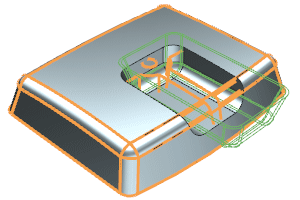
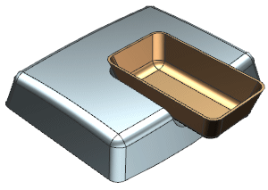
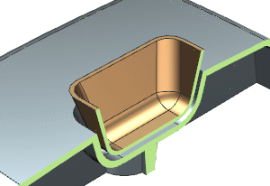

Show the tool and examine the results
-
In the Part Navigator, double-click the Emboss Body you just created.

-
Expand the Settings group, and select the Keep Tool
 check box.
check box.
-
Click OK.

-
On the View toobar, click Clip Work Section
 to examine the clearance between the small tool body and the large target body.
to examine the clearance between the small tool body and the large target body.

-
Click Clip Work Section
to turn off the section.
-
Double-click the Emboss Body feature.

-
In the dialog box, clear the Keep Tool
 check box, and click OK.
check box, and click OK.